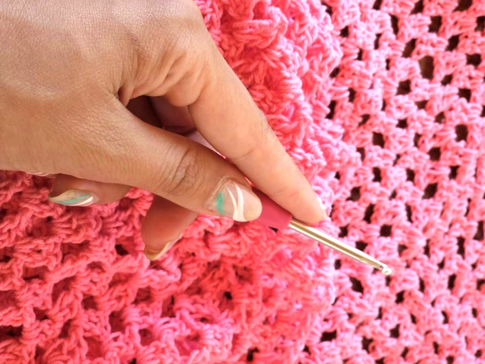

Si querías aprender a tejer ¡Llegaste al lugar indicado!
Somos una escuela de tejido con más de 8 años de trayectoria, líderes en Mendoza. Clases
presenciales para todos los niveles:
Inicial - Intermedio - Avanzado.

Niveles
Nivel Inicial
Conocimientos nulos sobre tejido al crochet, aprender desde cero.